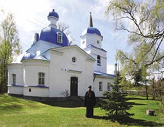
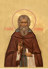

{kind=link}
{kind=link}
Церковь Покрова Божией Матери
На сайте представлена история церкви Покрова Божией Матери деревни Озера Гдовского района Псковской области — от основания в XV веке учеником преподобного Евфросина Псковского преподобным Иларионом Гдовским монастыря до закрытия церкви, ставшей к тому времени приходской, в 1937 году.
В 90-е годы ХХ столетия по благословению архиепископа Псковского и Великолукского Евсевия, а также по молитвам и с благословения старца протоиерея Николая Гурьянова священник Евгений Михайлов восстанавливает полуразрушенный храм, и верующие вновь имеют возможность помолиться у мощей преподобного Илариона Гдовского.
Во Псковской области, в Гдовском районе, в деревне Озера есть церковь Покрова Божией Матери. Она стоит на реке Желче, на полуострове, окружённом лесами и болотами. Чтобы посетить этот храм, нужно переправиться с деревенского берега через реку Желчу на лодке или пароме. У современного человека, созерцающего эту картину, возникает много вопросов. Кто и зачем построил церковь в столь недоступном месте? Почему в такой удалённости от больших населённых пунктов? Какой в этом смысл?

У каждого храма своя история. А история каменной церкви Покрова Богородицы, построенной в ХIХ веке, имеет свою предысторию в веке XV и повествует о преподобном Иларионе Гдовском. Он явился основателем пустынножительства в этом лесном краю, затем стал игуменом монастыря, на территории которого был построен первый, деревянный, храм Покрова Божией Матери, ставший в ХVIII веке приходским.

Празднование памяти прп. Илариона Гдовского: 10 апреля и 3 ноября (по новому стилю).
2026 год – 550 лет памяти преподобного Илариона Псковоезерского, Гдовского (почил 10 апреля 1476 года)